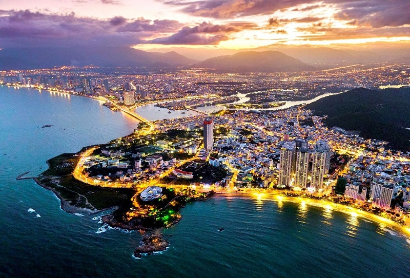
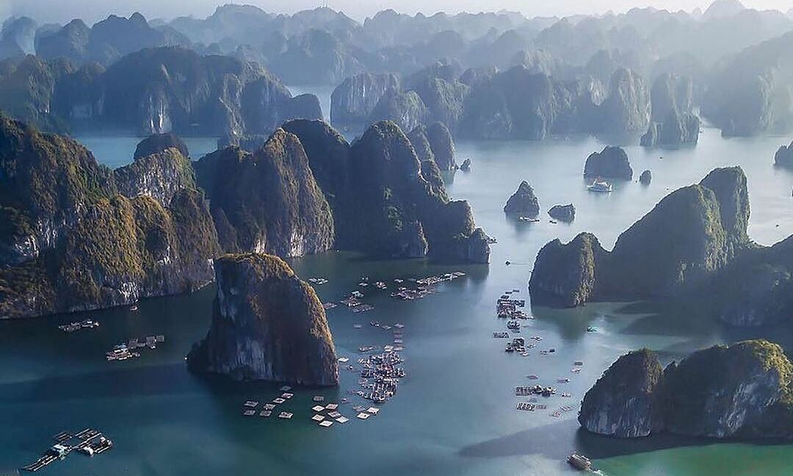

The Temple of Literature is the first university of Vietnam, where is a popular cultural and historical relic in every Hanoi travel tour.
The Temple of Literature was found in 1070 by Emperor Ly Thanh Tong to worship Chinese philosopher Confucius. Then became the first university of Vietnam, also known as the Imperial Academy.
Top 9 - Imperial Citadel in Hue
Imperial Citadel in Hue, one of the most important srtuctures of the Nguyen Dynasty, hold memories of a powerful feudal era in Vietnam. Visitors to Hue must explore this site to admire the beautyof the timeless archilectural structures of the ancient imperial capital.
Hue Imperial Citadel was not only a military stronghold but also a cultural and political center of Vietnam. The city served as the capital of Vietnam until 1945, when the country was divided into North and South Vietnam.
Top 8 - Phong Nha Caves
Phong Nha Cave, a part of Phong Nha - Ke Bang National Park, tops your list of must-visit destinations for a notable trip to Quang Binh. Here, you have a chance to immerse yourself in picturesque nature.
This cave is part of Phong Nha - Ke Bang National Park, a UNESCO World Heritage Site located in Son Trach commune, Bo Trach district, about 45 kilometers away from Dong Hoi city to the Northwest. It is one of the most impressive and largest caves among numerous caves in Vietnam.
Phong Nha Cave more than 7,730 meters long. The mouth of the cave is 20-25 meters wide, about 10 meters high, and 83 meters deep. Its complicated structure contains 14 grottoes, many connecting branches, and an underground river which is considered the largest in the world. The cave has two parts: the dry caves located at an altitude of 200 meters and the wet caves with the underground river.
Top 7 - Nha Trang

Nha Trang - the land of "Agarwood land, Yen sea" - has a special attraction for those who have ever set foot here. This beautiful coastal city deserves to be a "promised land" for those who are passionate about travel. Nha Trang is blessed with a temperate climate, prime location and beautiful scenery.
The city has Nha Trang Bay, voted by Travel and Leisure magazine as one of the 29 most beautiful bays in the world. Nha Trang also has an extremely diverse system of large and small islands, containing both beautiful scenery on land and underwater and still retaining its wild and rustic features such as: Hon Tre, Hon Mun, Hon Tam, Hon Dun, Hon Mieu. , Hon Ho, Hon Mot...
Top 6 - Sand Dunes in Mui Ne
Nestled along the stunning coastline of Vietnam, Mui Ne is renowned for its breathtaking landscapes and pristine beaches. However, it is the mesmerizing sand dunes in Mui Ne that truly steal the spotlight. These majestic natural formations, resembling a surreal desert oasis, offer an awe-inspiring sight that leaves visitors spellbound.
One of the most popular sand dunes in Mui Ne is the Red Sand Dunes, also known as Mui Ne Sand Dunes, located 25 kilometers away from the center of Phan Thiet City, near Hon Rom Beach. This attractive spot serves as a renowned playground and popular photography location in the tropical paradise of Phan Thiet, drawing many visitors who come to enjoy its beauty.
Top 5 - Terraced Rice Fields In Sapa
Terraced fields are among the most beautiful and breathtaking landscapes you will see in the Northwestern mountainous region of Vietnam. They are the perfect product made by the diligent hands of people and the creativity of nature.
When ethnic people set out to cultivate rice in the harsh mountainous areas, they plowed and created flat plots of land on the mountain slopes. In Sapa and other provinces of Northwestern Vietnam, terraced fields have existed for hundreds of years. Thanks to the perseverance of the people, Sapa's rice fields in Vietnam are ranked among the top 7 most beautiful rice fields in the world. Sapa rice terraces resemble towering steps reaching for the sky, and this breathtaking beauty has made the town widely known.
Admiring Sapa's rice paddies and other Vietnamese rice paddies, you will get to see not only magnificent natural scenery but also the agricultural culture of the local people and their beautiful traditions.
Top 4 - Phu Quoc Island
As an exotic island in Kien Giang Province, Phu Quoc Island is crowded with tourists from all over the world who want to enjoy their dream-like vacations with their beloved.
The pearl island possesses a variety of beautiful beaches stretching from the North to the South. Ninety nine mountains, majestic hills and primeval forests with diverse flora and fauna feature the unique beauty of Phu Quoc Island. Setting foot in the North of this island, you can have a chance to explore some famous destinations such as Rach Vem Fishing Village, Hon Mot Island, Long Beach, VinWonders Phu Quoc, Vinpearl Safari Phu Quoc... Meanwhile, in the South, the 12 islands of various sizes located in An Thoi Archipelago will be an ideal stopover for nature exploration activities.
Top 3 - Hoi An Ancient Town
Just downstream from Thu Bon River, Hoi An Ancient Town is located in the heart of Quang Nam Province, about 30 kilometers to the south of Da Nang City. Hoi An, Vietnam is a famous tourist attraction and an architectural relic complex.
The town's historical significance is deeply rooted in its role as a thriving trading port from the 15th to the 20th century. During this period, Hoi An Ancient Town served as a vital hub for commerce, connecting European merchants with their Asian counterparts. Traders from China, Japan, and Portugal left their indelible marks on the town through a diverse array of architectural patterns. Recognizing the exceptional value of Hoi An Old Town, UNESCO designated it as a World Cultural Heritage site in 1999. This recognition underscores the town's status as a living museum, showcasing a wide range of construction designs and urban lifestyles from around the world.
Top 2 - Thien Mu Pagoda in Hue
Thien Mu Pagoda is regarded as one of such treasures. It stands out for its ancient architecture, holiness, and mythology, filled with a variety of obscure historical legends.
The most ancient pagoda in Hue, Thien Mu Pagoda, sometimes called Linh Mu Pagoda, was constructed in 1601 by Lord Nguyen Hoang - the first Lord of the Kingdom of Annam (Outer Land).
Top 1 - Ha Long Bay

Ha Long Bay has an area of 1,553km2 including 1,900 large and small limestone islands with very vivid shapes. The bay has been voted many times by UNESCO as a world natural wonder, and is known as a place that must be visited once in a lifetime.
Among the top 7 natural wonders of the world, Ha Long Bay is certainly the dream destination of every tourist. Not only domestic tourists, foreign tourists are also very interested and admiring the natural creation here.
Coming to Ha Long, you will be free to explore, experience, and have fun. Most people's experience traveling to Ha Long is not to miss attractive places to visit such as: Ha Long Bay, old town, night market, Tuan Chau....